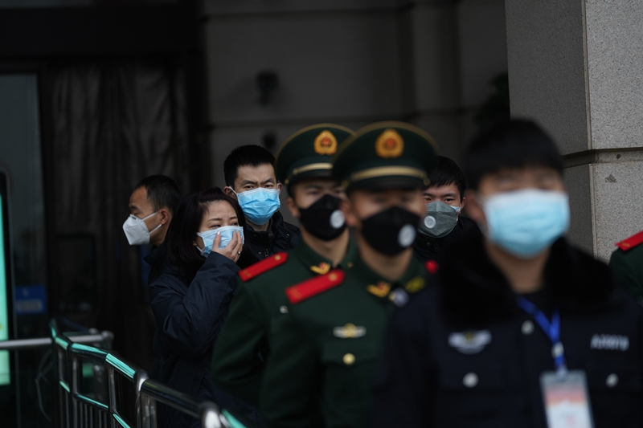
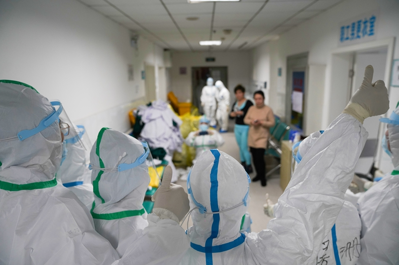
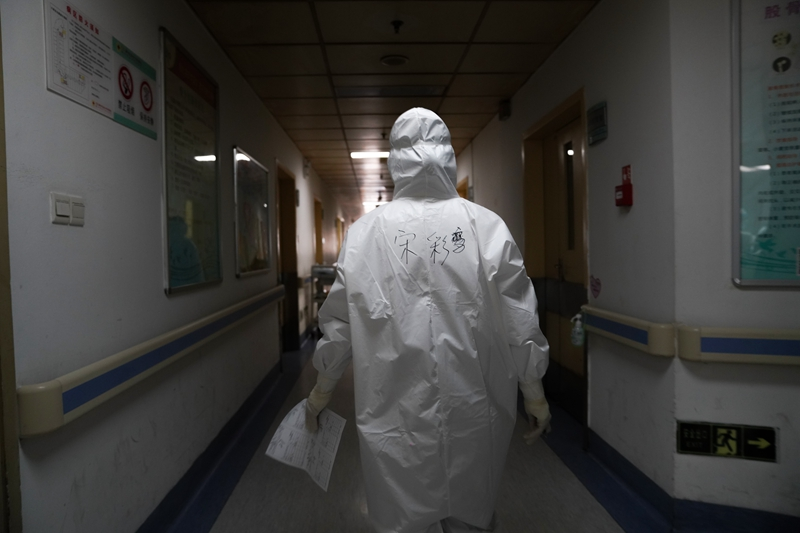

守家就是守城——武汉包子姐的除夕–专题-中国经营网
原文链接 备份链接 守家就是守城——武汉包子姐的除夕 2020-01-25 21:10 作者：周远征 来源：中国经营网 本报记者 周远征 重庆报道 “不管你在不在武汉，愿我们的心意在一起，大家一起保护自己，支持武汉，愿新的一年平安顺遂，无 …
1月23日凌晨2点“交通封城”令公布时，张奇还在刷手机。
张奇是北京人。1月20日，他坐高铁到武汉来探望朋友。此前媒体已经零星有了关于武汉新冠肺炎的报道，而病例数据在20日急速增加了2倍，危重患者已经有44人。不过，张奇对此极不敏感。他抵达武汉当天下午，一点看不出紧张气氛，至少有半数人没戴口罩。他打算在武汉多玩几天，订了一周的宾馆。当天晚上，他在宾馆电视上看到报道：习近平对武汉新冠肺炎作出指示，遏制蔓延；紧接着，钟南山接受采访，说新冠肺炎已经出现人传人和医务人员感染。“我觉得有点不对劲，到武汉两天，朋友没见上，哪儿都没去，就在宾馆看电视和刷手机。”看到“封城令”，张奇5分钟之内收拾好行李，急匆匆赶往汉口火车站。这座有121年历史的火车站，将于23日上午10点关闭。“我就是一个游客，我可不想困在这座危城里。”他在售票厅对财新记者说。
离汉口火车站5公里的武汉协和医院，赵雷正在睡觉。这位协和医院感染科主任医师，已经半个多月没有休息一天了。自2019年12月底以来，涌入他所在医院的发热病人越来越多，最高时一天达到八九百人。拥有单独一栋五层病房楼的武汉协和医院感染科，以前只有肝炎、血吸虫病等接触性传染病隔离病房，没有建呼吸道传染病病房。12月31日，他们把整个一层改成24个床位的呼吸道传染病隔离病区。24张床很快被填满，二层又拿出来作为隔离病房，然后还是不够，三层、四层也很快被腾空，原有的重症病人集中到五层。近30名感染科医生已经不够用，医院动员全院资源，尤其是呼吸科和急诊科的内科医生来轮班，护士也是全院调配。

汉口火车站，封站时间临近，武警和保安在现场拉起人防墙，很多旅客仍然尝试持票入站。
1月11日，武汉协和医院神经外科一名垂体瘤病人术后出现发烧，并很快恶化，CT显示左右肺均出现磨玻璃影病变，其病房护士也开始发热。1月15日，这位传染了14名医护人员的病人被转到赵雷主管的感染科隔离病区重症病房。
“对我们传染病医生来说，封城并不意外。”赵雷说，“这是阻止传染病蔓延的一个手段，之前的传染病防控中也用过很多次了，无论是当年欧洲的黑死病，还是1910年伍连德在东北消灭肺鼠疫，重要的做法之一就是隔离。”
隔离并不奇怪，但将有千万级常住居民的整个武汉三镇变成巨大隔离器，中国史所未有，世界从无先例。一座呼吸道传染病肆虐的城市，封城后的内部管理挑战严峻。武汉1月23日封闭所有离汉通道，26日封闭市内交通，外防输出，内防扩散。这座城市就像一颗超频的CPU，在前期悠游甚至迟钝地运行多日后，陡然加速进入战时状态。
紧接着，从1月23日起，鄂州、仙桃、枝江、潜江等地，除了山林遍布的神农架地区，湖北省几乎大部分城市都宣布进入封城状态。
1月下旬，中共中央总书记习近平作出部署，国务院总理李克强作为中央应对疫情工作领导小组组长亲赴武汉视察，与他同行的副总理孙春兰则留在武汉，在现场指挥。应急体系升级调整，又伴随着疫情发展曲线和全国声援的步骤。
1月29日，武汉迎来自1月21日以来的第一个晴天。多日阴雨散去，阳光带着紫外线让被病毒环绕的江城沐浴在一片金色之中。这一天，西藏成为内地最后一个启动重大突发公共卫生事件一级响应的省份，已有26个省份和3支部队医院组织52支医疗队、6097名医护人员奔赴湖北支援当地救护。

在武汉多个火车站及天河机场，绝大多数旅客都戴上了口罩。

2020年1月21日晚，武汉火车站，戴口罩的一家人观看车站内的电子大屏。 图/财新记者 萧辉
截至1月31日24时，全国31个省（区、市）和新疆生产建设兵团累计报告新冠肺炎确诊病例11791例，累计死亡病例259例；湖北省累计报告确诊病例7153例（其中武汉市3215例），死亡249例（其中武汉市192例）。
据财新数据，截至1月31日，累计重症占确诊病例数量下降至15.8%，与普通肺炎重症占比差别不大，死亡率已连续3日保持在2.2%的水平，与轻症病基本持平。
疫中武汉开始朝着好的方面发生变化。此时的武汉人耐心、坚韧与决心同在。人们同时也在想，为什么蓬勃欢乐、蒸蒸日上、四通八达的大武汉，不到一个月就变成了疫城？如果一切可以重来，从哪里做起？
第一章 病源在哪里？
“疑似SARS”之声
最早引人关注的还是病源。
2019年12月下旬，“武汉出现不明原因肺炎病人、疑似SARS”的消息流传网络。事后证明，这则来自武汉医生群体内部的小道消息确为预警之声。
12月30日，一份疑似武汉市卫生健康委员会发布的《关于做好不明原因肺炎救治工作的紧急通知》曝光，其中提及武汉多家医疗机构确实陆续出现多例不明原因肺炎病例，并与武汉华南海鲜批发市场有关联，要求各医疗机构上报近一周接诊过的具有类似特点的不明原因肺炎病人。
12月31日一早，多名身着防护服、背着喷雾器的防疫人员出现在华南海鲜市场里消毒，让人们回想起2003年SARS来袭时的场面。SARS全称为“严重急性呼吸系统综合征”，于2002年在中国广东出现，此后迅速扩散至全国乃至全球，最终造成超过8000人感染，774人死亡。
事实上，这天上午，国家卫健委一个专家组即抵达武汉。当天中午1点左右，武汉市卫健委首次公开发布通报称，近期部分医疗机构发现接诊的多例肺炎病例与华南海鲜市场有关联，目前已经发现27例，其中7例病情严重，其余病例病情稳定可控，有2例病情好转拟于近期出院。
2020年1月1日上午8时，华南海鲜市场出现落款为“武汉市江汉区市场监督管理局”和“卫生健康局”的休市整顿公告。该公告称：根据国务院《突发公共卫生事件应急条例》等法规条例的规定及武汉市卫生健康委关于肺炎疫情的情况通报，经研究决定对华南海鲜批发市场实行休市，进行环境卫生整治，请广大商户积极配合。
当天休市前，华南海鲜市场大部分商户还在营业。财新记者在现场看到，身着白色防化服的工作人员出现，准备进一步消毒。大部分商户只好收拾店面陆续离开，时有工作人员在市场里催促收摊。休市后，商户们聚集在市场外的路上，对突然休市和肺炎传闻议论纷纷。
1月2日，大量环卫工人在华南海鲜市场进行清洁作业，市场门口沿街排水沟渠的污泥也被挖出。财新记者在现场看到，身着防化服的人员在市场各处采样。其中，西区七街附近作为消毒重点区域，检疫人员对每个门面逐一搜集、提取检测物质。
有武汉的医生告诉财新记者，新冠肺炎疑似和发热门诊接诊时，是否有华南海鲜市场暴露是必问的流行病学史，早期的患者也确实比较多集中在华南海鲜市场周边。
作为疫情的风暴中心，华南海鲜市场旋即进入公众视野。
华南海鲜市场
华南海鲜市场位于武汉市江汉区，距离汉口火车站仅700多米，附近商业阜盛，人流密集。市场在2003年左右开业，由于生意火爆，开业后曾先后两次扩建，逐渐发展成目前占地面积约3万平方米、总建筑面积5万平方米、经营户超千家的规模，自称是华中地区规模最大的集海鲜、冰鲜、水产、干货等为一体的水产批发市场。
“我们大多是批发和零售结合。整个武汉及周围市区餐饮的原材料大多来自华南，华南休市，可以让整个武汉市的餐饮行业无法运转。”一位华南海鲜市场商户向财新记者表示。
尽管名为“海鲜市场”，但华南海鲜市场也能买到禽类、野味等食材。据财新记者调查，华南海鲜市场外围的商铺多是销售海鲜水产的，真正卖野味的都是在市场里面比较隐秘的地方。“武汉话叫‘斗里’（音），就是说在市场最里面，在市场外面都看不到，外行人也都不知道，他们好像也有一些暗语和行话。”
武汉市政府曾发布《关于规范活禽经营管理工作的通知》等规定，以管控活禽经营。不过，在华南海鲜市场的野生动物销售具有合法性，前提是卫生证明、检疫证明等相关许可。直到2019年9月，武汉市市场监督管理局发布的官方信息仍显示，华南海鲜市场有八家商户存在售卖虎斑蛙、蛇、刺猬等野生动物。此外，有消息称，一些《野生动物保护法》重点保护的动物，曾在这个市场秘密销售。一个海鲜商户告诉财新记者，每个月都会有穿制服的工商或检疫人员来检查，“一来就是几十个人”。查出违法者，市场要没收经营权，相关单位要进行罚款。罚款金额很大，据说查处一个卖眼镜蛇的罚了几十万元。
这家市场分东西两区。西区有摊位600余个，从业人员超1000人。野生动物销售集中在西区西边。一位现场商户说，直到关市之前，一直看到有卖蛇、野鸡、娃娃鱼、鳄鱼和野兔的，大多是宰杀好的，但也有宰杀活狗和蛇的。“味道比较大。比如蛇就有一股骚味，商户也都是随手抓，没有任何保护措施。”
此次早期患者主要分布在西区摊位，这里卫生环境极差，摊位前人行区域污水横流，通风不畅，东区也受到一定影响。财新记者在采访中了解到，华南海鲜市场多年来环境脏乱，一直被附近居民诟病。早在2018年，武汉当地市民就曾在城市留言板频频留言，指出市场以新华路为界，两边街道脏乱差、污水横流、垃圾满地、腥臭难耐，以及运海鲜的大货车任意占道停车、腐臭横飘等环境、交通问题，但一直没有得到回应。
疫源地不止一个
流行病学家针对华南海鲜市场的检测，高度怀疑此次疫情与野生动物交易有关。1月26日，中国疾病预防控制中心病毒病预防控制所发布消息称，该所从华南海鲜市场的585份环境样本中检测到33份样品含有新冠病毒核酸，并成功在阳性环境标本中分离病毒，提示该病毒来源于华南海鲜市场销售的野生动物。具体而言，33份新冠病毒核酸阳性标本分布在市场上的22个摊位和1个垃圾车，其中93.9%阳性标本分布在华南海鲜市场西区。经调查发现，华南海鲜市场名义上是海鲜市场，但实际上是个综合市场，市场西区存在野生动物交易，尤其是西区的七街和八街靠近市场内部的区域存在多家野生动物交易商铺，而这一区域的阳性标本也比较集中，占全部阳性样本的42.4%。
1月27日，中国疾控中心发布的《2019新型冠状病毒疫情进展和风险评估》也表示，从现场的溯源调查、病毒基因序列比对和既往疾病监测血清标本检测等证据推测，目前认为新冠病毒起源于野生动物，可能于2019年12月初经由华南海鲜市场某种野生动物外溢及其市场环境污染感染人，进而造成人与人之间传播。
然而，1月26日发表在国际著名医学杂志《柳叶刀》上的一篇论文，给疫源地是华南海鲜市场的结论打上了一个问号。
这篇由首家新冠肺炎患者定点收治医院——武汉市金银潭医院副院长黄朝林等人对2020年1月1日前收治的41名病例进行研究的论文，透露了一个不寻常的信息：该院收治的首个感染新型冠状病毒肺炎患者发病日期为2019年12月1日，其没有华南海鲜市场暴露史，家人也未出现发热和呼吸道症状；至12月10日，才另有3人发病，其中2人也没有华南海鲜市场暴露史。在金银潭医院收治的前41名患者中，仅有27名接触过华南海鲜市场。金银潭医院又名武汉市医疗救治中心，由原武汉市传染病医院、武汉市结核病医院、武汉市第二结核病医院整合而来，是武汉市惟一的传染病三甲专科医院。
论文第一作者、武汉市金银潭医院副院长黄朝林在接受财新记者采访时表示：“从现在整个发病情况来看，海鲜市场已经不是惟一的暴露源，（新型冠状病毒起源）是多源性的。”但黄朝林认同该病毒有较大可能来源于野生动物。
论文通讯作者、中日友好医院呼吸与危重症医学科主任医师曹彬在回复科学新闻网站ScienceInsider时也表示，“现在看起来很明确，华南海鲜市场不是惟一的疫源地，但说实话，我们还不知道病毒到底来自哪里。”
第二章 医院正面战
谜团
尽管疾控部门的流行病学调查，迄今仍不清楚新冠肺炎的疫源地和从蝙蝠传入人体的中间宿主，但公共卫生链条的下游——临床医生们，早在2019年12月就已经纷纷感受到不同寻常的紧张气氛。
“我们协和医院在汉口片区，离汉口火车站旁边的华南海鲜市场不算远，但武汉市中心医院后湖院区、武汉市红十字会医院和湖北省新华医院离海鲜市场更近，所以他们接诊得更早，最早的一批病人是以感冒或者肺炎症状到他们那里就近就医的。”武汉协和医院感染科主任医师赵雷回忆。从地图上看，中心医院后湖院区、武汉市红十字会医院（下称红会医院）和新华医院构成了一个三角形，华南海鲜市场正位于中央。

1月24日，武汉红十字会医院，护士们在进入病房前合影，竖起大拇指给大家鼓励打气。
协和医院的发热门诊属于赵雷所在的感染科。在他的印象中，他们科室第一例疑似新冠肺炎患者就来自华南海鲜市场，是由郑主任接诊的。“当时我们科内会诊，也是觉得这个病人肺炎的表现比较特殊，出现病毒性肺炎的改变，有大面积的肺部磨玻璃状阴影。”按病毒性肺炎治疗几天后，这位病人被转院到武汉市金银潭医院。
但很快，协和医院的发热门诊接诊了越来越多的病人，最高时一天可达八九百人。“这次疫情正好发在冬春季节，本身就是其他呼吸道传染病的高发季节，大量病人涌到医院来，都是以发热就诊的。”像许多大型综合医院一样，武汉协和医院感染科以前只有接触性传染病隔离病房，比如肝炎、血吸虫病，没有建呼吸道传染病病房。呼吸道的病人统一收治到金银潭医院。12月31日，拥有单独一栋五层病房楼的协和医院感染科，不得不把一层改建成呼吸道传染病隔离病区，设了24张床位。
病床很快被填满了。医院又开辟二层作为隔离病房，还是不够，三层、四层也很快被腾空，原来的病人部分被劝退出院后，剩余重症病人再集中到五层。感染科原有的近30名医生已经不够用，医院动员全院内科资源，尤其是呼吸科和急诊科的内科医生来轮班，护士也是全院支持。
类似的现象在汉口、在武汉其他医院都不同程度出现。这显然不像一般的冬春季呼吸道传染病，应有新的病毒侵入。看起来新的“不明肺炎”传播速度快，重病率高，怎么能说“可防可控”，不向外宣示、动员各种资源积极防范呢？医生们心中渐生谜团。
紧箍咒
影像医生也是一线见证人。2019年12月30日上午，湖北省新华医院的放射科医师李云华初次听说，院里收治了一些疑似SARS病人，其中两名病患与华南海鲜市场接触过。李云华所在的新华医院又名湖北省中西医结合医院，是离华南海鲜市场最近的三甲医院。
当天晚上，李云华到医院神经内科探望住院的父亲，见到一名女医生神色焦急地与家人通话。女医生的丈夫在武汉市中心医院后湖院区，当天他所在医院也接到七名疑似SARS病例。女医生对家人说，自己感冒，身体无力。
这天晚上，李云华也从手机上看到一个群友圈截屏：中心医院后湖院区眼科医生李文亮首先在医生群中曝出：“华南海鲜市场确诊了7例SARS⋯⋯在我们医院后湖院区急诊科隔离，请大家注意，第一例患者是水果铺批发摊老板”。李文亮还贴出了诊断报告。接着，武汉红会医院神经内科医生刘文也确认此事，并提醒大家：“洗手！口罩！手套！”
第三位跟进的是武汉协和医院肿瘤中心医生谢琳卡，她在微信群里提醒，“近期不要到华南海鲜市场去，那里现在发生了多人患不明原因肺炎（类似非典），今天我们医院已经收治了多例华南海鲜市场的肺炎病人。”
当晚，多人在网络上发出类似信息。同步传开的还有武汉市卫健委的内部紧急通知。
12月31日，武汉市卫健委的公开通报，确认了近期部分医疗机构接诊有27例“不明原因”的病毒性肺炎，但又安抚性地表示，调查“未发现明显人传人现象，未发现医务人员感染”。李云华告诉财新记者，他看到武汉市卫健委的通报，稍稍放心。
2020年元旦，武汉警方微博“平安武汉”发布消息，“八名散布谣言者被依法查处”。官微称武汉市部分医疗机构发现接诊了多例肺炎病例，市卫健委就此发布了情况通报，但一些网民在未经核实的情况下，在网络上发布、转发不实信息，造成不良社会后果。公安机关已传唤了八名违法人员，并依法进行了处理。
这八名“违法”网民，事后证明多为医生。此前，武汉市中心医院医生曾将病人病原体样本送至第三方检测公司，发现有与SARS病毒相似度较高的病原体，相关检测结果开始在医生群体内流传。
1月28日，这八人得到了“平反”。最高人民法院微信公众号发文称，“事实证明，尽管新型肺炎并不是SARS，但是信息发布者发布的内容，并非完全捏造。如果社会公众当时听信了这个‘谣言’，并且基于对SARS的恐慌而采取了佩戴口罩、严格消毒、避免再去野生动物市场等措施，这对我们今天更好地防控新型肺炎，可能是一件幸事。”
然而，当初正是这份处理八名“违法人员”的警方公告，犹如一道紧箍咒套住了众多医生。随着接诊越来越多的类似病人，越来越多的医生从临床看到不同寻常的肺部病毒感染，而且人传人的迹象也越来越明显。但多数医生们不再敢公开发声，“怕被警方传唤”。
1月5日，武汉市卫健委通报，确认符合不明原因的病毒性肺炎诊断患者59例；并再次强调，初步调查表明，未发现明显的人传人证据，未发现医务人员感染。
1月6日，武汉市人大、政协“两会”开幕。在此期间，1月6日-10日，武汉市卫健委未发布关于不明原因肺炎的疫情通报，直至1月11日，武汉市卫健委才更新疫情通报，将“不明原因”的病毒性肺炎改称新冠肺炎，病例数则从59人减少为41人，并透露1月9日有1名患者死亡。不过，通报中仍表示，未发现医务人员感染，未发现明确的人传人证据。
这并非事实。
“我们所有医院的医生都知道这个事不对头，因为我们看到的情况和现实报出来的情况差太远了。”武汉一名大型三甲医院影像科医生告诉财新记者，肺部间质性改变以往非常少见，他所在科室每次遇到相关影像，甚至会引起科室内的学习讨论，但在1月15日时，其所在医院发热门诊已经一天能发现50个此类病变。
医生病了
噤声之时，新冠病毒在医院扩散开来，医务人员陆续倒下。
李云华向财新记者透露，1月6日，新华医院的一位呼吸内科医生就出现异常现象，肺部CT显示有一小块阴影，呈现磨玻璃状。这位医生并没有接触过华南海鲜市场。当天新华医院院方召集各科室负责人开会，科室主任传达院方指示，不得把相关情况泄露给外界，尤其不能告诉媒体。从1月6日开始，科室负责人反复向医生强调，“不造谣不传谣，以免造成社会恐慌”。“这种状况一直持续到1月20日。”李云华说。
实际上，从1月3日，李云华就发现了三例肺部磨玻璃状CT报告单，类似病例每天增加，而且增加比例呈直线上升趋势。1月10日磨玻璃状病例增加到30个的时候，李云华就觉得事情不对劲了。虽说尚待严格的病毒检测，但李云华凭经验认为，“我从没见过增长这么快的病毒，每过几天翻一番，这个速度太骇人了。”李云华由此时再不敢相信官方宣称的专家判断，各医院放射科医生之间会交流疑似病例数字，情况都很不乐观。
1月11日，新华医院出现第二例医务人员感染，患者就是2019年12月30日晚上他遇到的神经内科女医生。李云华仔细看过她的肺部CT，单侧出现磨玻璃状阴影，“像被子弹打过的一块一块的阴影”。1月16日，女医生再做肺部CT，双肺感染，病情加重。
也是在1月16日，医院耳鼻喉科原主任梁武东来照CT。李云华记得很清楚，那天梁武东“发烧畏寒，看起来很虚弱”。“我看了他的CT结果，整个肺部都感染了，大白肺。”1月18日，60岁的梁武东转入新冠肺炎的定点医院金银潭医院，随后于1月25日去世，成为此次武汉新冠肺炎疫情首位去世的医务人员。
新华医院医务人员的感染数字难详，但李云华看到的案例越来越多：一位体检科医生跟一名疑似患者客户交流了半小时，不久就查出肺部感染；一名牙医感染后，传给了放射科两位找他看牙的放射科医生⋯⋯不仅是呼吸内科，其他二线科室甚至保安也感染了。
李云华告诉财新记者，截至1月29日，该医院900多名医务人员中已经出现30多名新冠疑似病患。
李云华并不知道，在离他不远的一家大三甲医院，也有一位放射科医生在密切关注着CT片中的磨玻璃影。刘力也是在2019年12月30日看到关于类SARS病毒的消息，第二天开始戴口罩，并提醒同事们也戴上。刘力所在的医院有五六千名员工。他透露，现在院内确诊和疑似的感染人数或有百人之多。“我就是看CT诊断，最多的一天看到20个，我们科室算少的，也有3个隔离了。”
红会医院放射科的主任，最让刘力佩服。“他们医院离华南海鲜市场很近，是重灾区，现在惟一没有医护人员感染的就是放射科。这个主任最先发现这个新的病毒性肺炎，就向院领导汇报要物资，发不下来他就开始自己搞物资，让科里的员工都穿上防护衣、戴上口罩。”据他介绍，还有市中心医院急诊科的主任，也是很早就很警觉，给一线医疗人员发放隔离服，上了三级防护，把全身都罩起来，得以保全这个风险性很高的科室。
医生病了，无人认账，显然有一种“指令”在起作用。李云华透露，院方不仅不公开医务人员感染情况，甚至出台一条“奇葩规定”——本院医护人员CT检查，对于肺部不明原因肺炎待排除的，CT片子及结果一律不给本人，由科室统一交给医院内部的感染管理科。财新记者采访的武汉多位医生都透露，他们的医院也有类似规定——“检测结果不公开，阳性结果以电话通知”。
刘力看CT记数的习惯从1月11日开始。这一天武汉市卫健委通报，截至1月10日24时，初步诊断有新型冠状病毒感染的肺炎病例41例，未发现医务人员感染，未发现明确的人传人证据，“所有密切接触者739人，其中医务人员419人，均已接受医学观察，没有发现相关病例”。当天武汉方面发布的信息还称，这次不明原因肺炎病例发病时间全部在2019年12月8日至2020年1月2日之间，1月3日之后无新发病例。
刘力说自己当时就傻了，他明明知道武汉同济医院调到发热门诊支援的急诊科医生陆俊1月5日就出现“无明显病因”的发热症状，右肺CT片有片状磨玻璃影，到1月7日再次复查时右肺、左肺均出现斑片和毛玻璃样病变，后诊断为不明原因病毒性肺炎，1月10日下午已经住院了。
病毒研究赢在了起跑线，但是⋯⋯
与17年前SARS病毒的发现几经曲折、曾误为衣原体的历程相比，这一次的病原识别等关键性的科研结果出台十分迅速。短期初步鉴定出新型病毒，被世界卫生组织（WHO）1月9日称赞为“一项瞩目的成就”。
病毒分离在2020年第一周之内就已完成。据上海市公共卫生临床中心介绍，2019年12月26日，该中心科研项目常规收集到武汉市中心医院和武汉市疾控中心的不明原因发热患者标本一份。2020年1月5日上午，该中心就从标本中检测出类SARS冠状病毒，通过高通量测序获得了该病毒的全基因组序列，根据测序数据绘制的进化树也证实武汉新型冠状病毒是历史上从未有过的。获得该科研结果后，该中心立即向上海市、上海市卫健委和国家卫健委等主管部门做了报告。
国家病原微生物资源库则显示，第一株源自临床患者的新型冠状病毒在1月6日由中国疾控中心病毒病预防控制所成功分离。
2020年1月8日，国家卫健委专家组初步确认了新型冠状病毒为此次疫情的病原。该病毒的全基因组序列也已获得。
1月10日，中国疾控中心就与世界卫生组织和各国分享了病毒的全基因序列。
这个速度早于科研人员的预期。根据病毒学界遵循的科赫法则，病毒分离后，还有一个较为耗时的程序，即花1周以上时间将病毒分离后培养，再进行检测，才能最后确定病原。锁定病原是传染病防控的关键步骤，基因序列测出意味着可以对新发患者作出诊断。此次新冠病毒的科研速度走在了科赫法则之前。
然而，相对于病原信息较快披露，这种新型肺炎传染性情况却很少被提及。到了1月11日，武汉市卫健委官方通报，依然还在要求“制定工作方案”“开展流行病学调查”、宣传以及配合研究等，并提醒公众到人群聚集地方“必要时可佩戴口罩”。
定论“人传人”
随着医者因临床感染相继倒下，武汉的疫情变得极为严峻。
现在仍然很难确切获得当时的数据。以李云华1月初以来在X光室亲眼所见，“先是第一天2-3个，第二天4-5个，第三天7-8个，前三天增加不是很明显，然而突然就呈现指数级增加，到1月10日就一天有30个了。”然后每过三四天就翻一番，1月18日86个，之后每天都超过100例以上。”李云华说，院里的CT仪器每天超负荷运作，到1月20日达到饱和状态，“机器都累傻了，经常死机，因为只能拍这么多，数字终于不再往上蹦了”。CT诊断不算最后确诊，但是确诊的重要参考依据。李云华被这样的情形惊呆了。
刘力则是从11日起也不敢再相信官方通报，他重看从1月1日起的所有急诊查肺的CT诊断。“我就看报告的描述。每天好几百人。按照我们的搜索方式把肺的搜出来，一条条点进去，影像中的结节就带过了，斑片看一下，而且只看了斑片状磨玻璃的。”刘力痛心地看到，从1月1日开始，先是个位数的增加，然后逐渐开始翻倍，“到1月15号的时候，我发现了50例。可是到这一天，卫健委还在报原来的41个。从11号就1例没有增加。”
1月11日-17日是湖北省人大、政协“两会”召开的大日子。这期间，武汉市卫健委的通报始终表示无新增新冠肺炎病例，只是1月16日当日的通报中，将之前的“未发现医务人员感染，未发现明确的人传人证据”稍改措辞，变成“尚未发现明确的人传人证据，不能排除有限人传人的可能，但持续人传人的风险较低”。
1月17日上午，湖北省十三届人大三次会议闭幕。1月18日凌晨，武汉市卫健委的通报中终于宣布1月16日有4例新增新冠肺炎病例；19日凌晨，又通报了17日的17例新增，累计报告新冠肺炎病例62例。
对此次新型病毒能否“人传人”的误判，在防控实践中不断延续。传染病人际传播的代际，是界定其严重程度的一个重要因素。代际传播越多，疫情就越严重，甚至可能出现“超级传播者”。疫情防控关键在于，尽早确定病毒是否具有人传人能力，及时制定防控策略，阻断代际传播。
尽管早期已有病例指向“人传人”，但官方迟迟未发布确认信息。
香港大学教授袁国勇等人在《柳叶刀》上发布了对一个感染家庭的研究。这一家庭有7名家庭成员，6人感染新型冠状病毒，其中1人没有去过武汉，而去过武汉的家庭成员飞离武汉时间为1月4日，在武汉期间没有在武汉接触过动物，也未去过华南海鲜市场，没有吃过野味，只是其中2人去过武汉的医院。
医务人员感染更加明确人传人信号。据财新记者了解，武汉同济医院急诊科医生陆俊被调至发热门诊支援后，于1月5日出现“无明显病因”的发热症状，1月7日CT显示肺部明显病变，1月10日下午以“病毒性肺炎可能”收治入同济医院。
知情人称，陆俊医生被感染前，并无华南海鲜市场及野生动物等相关接触史，在发热门诊接诊时被感染的可能性颇大。
武汉协和医院神经外科14名医护人员被同一患者感染更是直接指向，病毒可能出现了“超级传播者”。1月11日，这名患脑垂体瘤的69岁患者在术后第四天出现发烧，肺部CT显示双肺磨玻璃影病变，不久之后，与他接触的多名医护人员也陆续出现发热症状。
其主管医生、武汉协和医院感染科主任医师赵雷向财新记者介绍，病人没有去过海鲜市场，当时医生还不知新冠肺炎会人传人，也不知该病毒的传染性有多强，医生最初按术后感染进行诊疗和防护。
1月19日那一天，李云华看到新闻，武汉百步亭社区举行有4万多个家庭参加的“万家宴”，他赶紧在微博上留言：“武汉的爹爹婆婆们，请戴好口罩。”他感叹自己的朋友圈仅有几百人，人微言轻，只能遗憾。
同在1月19日晚上，国家卫健委宣布1月1日已成立新冠疫情领导小组，主任马晓伟新任组长。1月20日凌晨，官方态度略有变化：武汉市卫健委方面一次性更新了两天的新增病例数据，1月18日和19日两日共新增136名确诊患者。其中，18日增59人，19日增77人，患者总数增加到198人，其中重症35人，危重症9人，死亡3人。此次通报中，首次未提及“不排除有限人传人”“持续人传人风险较低”的判断。
猜测和争论20天后，新冠病毒“人传人”的疑惑终于有确定答案。1月20日晚间，国家卫健委高级别专家组组长钟南山明确表示，“肯定有人传人”。他在就武汉新型冠状病毒肺炎防治情况回答记者提问时首度公布，已经有14名医护人员被感染。
这一天，新华社发出报道：中共中央总书记习近平就武汉的新冠病毒疫情作出重要指示，提出要把“人民群众的生命安全和身体健康放在第一位”。此时，国内外报告的新冠疫情为295例。习近平首次提出，坚决遏制疫情蔓延势头。
中央精神相当明确，要及时准确、公开透明发布疫情，回应境内外关切。
直到1月21日，武汉市卫健委才首度通报有15名医务人员确诊感染新冠病毒。但据财新记者了解，当时实际被感染医护数量早已超过这一数字。
多份国际研究显示，新冠病毒的传染性或高于SARS病毒。中国疾控中心副主任冯子健在1月27日晚接受央视采访时亦称，有研究结果已经显示，新冠病毒的人际传播能力与SARS有相似之处，平均一个病人能够传染2个到3个人。更严重的是，新冠病毒病例的倍增时间比SARS要短，SARS是9天左右会倍增，新冠病毒大概六七天的时间病例就会倍增。这导致确诊病例增长较快。
新冠病毒的传播能力已经得到世界卫生组织的确认。北京时间1月24日凌晨2点，世界卫生组织在《关于新型冠状病毒（2019-nCoV）疫情的<国际卫生条例>突发事件委员会会议声明》中披露，中国已经向其报告了“武汉的第四代病例和武汉以外的第二代病例”。

1月24日，穿好防护服的医护人员准备进入隔离病房，后背写着自己的名字方便他人辨识。

医护人员每次需要穿戴两层手套，出来后要用消毒水进行消毒，掌心在消毒水的腐蚀下已经泛白。
由于武汉的医院里患者与医生之间院内交叉感染严重，事实上，要追溯病毒传播至第几代也已成难事。财新记者在武汉走访看到，多家医院将发热门诊患者集中在一个几乎密闭的空间内，如门诊大厅或体检大厅，仅留一两扇小门出入，患者及陪同人员动辄要在同一空间内共处数小时，交叉感染风险巨大。“武汉已经没有代的概念了，不能分了，‘流行病学史’根本不对。”一位第一批到达武汉的专家组成员告诉财新记者。
1月22日深夜，刘力给财新记者打来电话：“昨天24小时，做了大概200个CT，有143个（疑似）了啊。”说完这个数字，他忍不住哭了。
一个多小时后，武汉市新冠肺炎防控指挥部发布了“交通封城”的第一号通告。
第三章 封城前后
超出预想
尽管至1月21日，湖北省的领导们还参加了一场欢庆春节的大型表演，武汉当地的气氛在1月20日疫情明朗之后，已经开始紧张。
1月20日，武汉市卫健委在官网公布全市发热门诊医疗机构和定点救治医疗机构名单，全市发热门诊61家，其中中心城区41家，中心城区的定点医疗机构为金银潭医院、肺科医院和汉口医院。
1月21日，武汉市卫健委又公布了武汉七家收治发热患者的定点医院（汉口医院、红会医院、市七医院、市四医院西院区、市九医院、武昌医院、市五医院），规定从1月22日开始，所有体温超过37.3度的患者将集中到这七家定点医院诊治；前一日公布的所有61家发热门诊医疗机构，不得以任何理由关闭发热门诊，要继续开展预检分诊和一般发热患者的诊疗。
一切都已经太晚了，现实远远超出官员们的预想。
69岁的谢作良没有去过华南海鲜市场，只是在1月18日上午去汉口看了一场摄影展，当晚发烧，次日就医时发现肺部有病毒性感染。
1月20日，他按医生建议，一大早赶紧到武汉协和医院挂号，他前面发热门诊已经有数百人排起了长龙。
财新记者1月20日在武汉协和医院也看到，不仅是发热门诊，输液室的队伍也排到门外，医护人员均身着防护服进行登记、问诊、输液等工作，一窗之隔的检验科医生也戴上了防护面罩。发热门诊张贴的一张告示显示，因就诊患者较多，等候时间或为3个-4个小时。附近保安告诉财新记者，人数陡增也就是这几天的事，主要是许多医院已经不再接受发热患者，一律要求到武汉协和医院或同济医院进行排查。
谢作良等了五个多小时没有轮上，身体不舒服只好先回家。当晚，他看到了电视上对钟南山的采访，第一次明确说新冠肺炎可以人传人。此时他已经胸闷难喘。
21日清晨，谢作良又早早起来，急匆匆到离家最近的新华医院看病，希望能住院治疗。他看到了比前几日更黑压压的人群，忙碌的护士告诉他床位已满，根本住不进去。
22日，湖北决定启动突发公共卫生事件二级应急响应。或因此获得更大调配权，武汉市卫健委又公布了“7+7”医疗方案，由同济医院、协和医院、中南医院等七家大医院对口支援前一日征收的七家定点医院，计划腾出3400张床位，专门对发热患者进行门诊。

2020年1月28日，武汉火神山医院施工现场，数十台挖掘机同时作业。
建筑工人铺设钢筋。
建筑工人在地面铺防渗保护膜，避免污水渗入地下。
3400张床位，这使谢作良又燃起了斗志。下午5点多，他打车到红会医院看病。现场的混乱景象让他大吃一惊：有病人因为住不进院，拍着桌子骂医生，还有情绪激动的病人拿手锤玻璃门；医生一连坐十个小时，没有人替班。等了七个多小时，接近午夜，终于轮到谢作良看病，医生告诉他没有床位，给他开了口服药。
谢作良的家离医院有5里地，他没打到车，走了一个多小时，凌晨快2点才到家。此时已是1月23日，武汉封城。
“如果我们把这事情看大一点，就拼死上谏啊！”
1月22日新规实施第一天，财新记者来到武汉市红会医院发热门诊。在这所二甲小医院，清晨就有大量发热病患涌入，本不宽敞的大厅塞满数百名病患，走廊过道也挤满了打点滴的人。所有人都戴着口罩，咳嗽声此起彼伏。
一位排队的女患者王红告诉财新记者，她的邻居感冒发烧后送到医院隔离，不到一周去世，她本人也被传染。被医生指为病毒性肺炎，“我就问医生是不是新冠肺炎，医生说是的，但是只有做了试剂盒才能确诊”。1月20日，王红本就患有肾病的丈夫也开始喘粗气，四肢无力。到市中心医院做CT，同样是病毒性肺炎。但二人都住不了院，她家属中已有八人被感染。王红哭了：“我自己也知道我是一个移动的病毒源，但是医院不接收我住院呀。”
同样是定点收治医院，1月21日-22日的汉口医院同情同景：发热门诊封闭的大厅内，挤满了戴着口罩的患者和家属，从挂号到就医，需要在狭小的空间内排队长达七八个小时。
汉口医院由原消化科病房改造而来的留观区，走廊临时增设了一排病床，患者躺在床上输液。大厅前后均只打开一道玻璃门，两名保安在一旁把守，严格规定来就诊的人前门进，后门出。多名患者告诉财新记者，从1月21日晚上到这里排队，一直到22日下午仍未拿到号。
新华医院放射科医生李云华，目睹了从1月20日到22日气氛陡然紧张下的混乱：一边是因为挂不上号、住不进院恐慌的病患，一边是忙乱失序的医院。来看病的人倍增，医生们加班加点，从20日起他住到了医院附近的宾馆，再也没有回过家。看着那些没有力气爬上CT台的重症病患，李云华认为，卫健委的安排短短几日内数次变动，实在是完全“没有预估到病患的需求”。他甚至在想，如果自己勇敢些早站出来，会是什么情形？
“传染病这一块应该是宁说大、不说小的。刚开始可能只有四个人同时在海鲜市场被感染了，但既有可能是同时被一个动物感染，也有可能人传人。防疫应当考虑其最大风险。结果大家就想尽量往小说。如果我们把这事情看大一点，就拼死上谏啊！包括医生，包括疾控官员，其实我们陆陆续续都知道这个情况很严重，但大家都不敢说真话啊。”李云华说，“我们医护人员们没日没夜工作，就是想和死神赛跑，抢救病人，这些病人都是跟我们同住一个城市的活生生的人，他们本不必遭受这么大的痛苦。”
历史的拷问
上海市医疗救治专家组组长张文宏认为，武汉整个处置上缺乏早期科学管控的意识，应对疫情需要专家迅速介入和评判。他认为，疾病暴发之初，看到病例大多来自华南海鲜市场之时，这一情况没有得到重视，导致疫情继续蔓延，当很快出现系列聚集性发病案例的时候，已经到了处置武汉疫情的关键节点。进而，当人传人之后的二代和三代病例出现，疫情就标志着进入第二阶段。这个阶段时间越长，则残余病例数量越大。
香港大学联合病毒学研究所副所长朱华晨向财新记者介绍，作为一种新病毒，初期传播力弱，整体来说被感染的人症状也较为轻微，但如果没有在这个黄金时间段将病毒控制住，有可能就会造成大面积感染。一旦病毒在很多人体内存活并适应人体后，就有机会进一步变异，产生传播力更强、毒性更严重的变异。
为什么在明显病毒“人传人”证据的发布方面如此滞后？为何相应的结论没能更早转化为果断的防控措施？
事实很残酷，科学无法掩盖。
1月23日，就在武汉封城当天，中国疾控中心、湖北省疾控中心等多家单位共同完成后来完成了一篇调查。据调查写成的论文，1月29日在国际顶尖学术期刊《新英格兰医学杂志》发表。论文显示，早有证据表明，自2019年12月中旬以来，密切接触者之间已经发生人际传播。根据论文中的一张图表，大多数最早的病例均报告了华南海鲜批发市场暴露史，但从12月底开始，与华南海鲜市场不相关的病例便呈指数增长。
“总之，我们发现武汉现阶段的新冠肺炎病例倍增时间约为7.4天。密切接触者之间的人际传播从12月中旬开始已经发生，并在此后一个月内逐渐播散。”论文写道。论文中的图表显示，武汉在1日至11日，有七名临床医务人员感染；12日至22日，有八名医务人员感染。

1月24日，武汉红十字会医院，医生观看患者的医学影像。
数字或并不准确，但科学分析结论相当明确：人际传播无疑是病毒传播能力加速度、传染病扩大流行的重要前提；而医务人员临床被感染，不仅是救治力量的损失，还使医院更有可能成为疫病之源，会极大地增加防控难度，造成传染病暴发的可能。
该研究的通讯作者，包括中国疾病预防控制中心副主任冯子健和湖北省疾控中心主任杨波。共同作者包括国家卫健委高级别专家组成员、中国疾控中心主任高福。据事后解释，论文是从1月23日拿到完整数据后开始写作的。
但究竟是在何时，疾控中心的专家们就已获得哪怕还不完整但已能说明相当问题的数据？为何没能尽早公布，让公众知道？为什么不能更早发出警示？
论文引起质疑后，中国疾控中心主任高福于1月30日晚间告诉财新记者，发表论文的目的是“世界共享数据，表明开放透明，希望全世界专业人士出谋划策，是防控之所需”。中国疾控中心副主任冯子健对财新记者确认，论文是根据截至2020年1月23日前上报的425例确诊病例（包括15名医务人员）所做的回顾性分析。至于最早于11日之前七名医务人员感染数据何时获知，高福及中国疾控中心未正面答复。
着手调研武汉发现的新型冠状病毒后，中国疾控中心于1月6日在机构内发文启动二级应急响应，15日升为一级响应。这一情况是否知晓湖北，有否建言湖北，不得而知。而湖北公开启动突发公共事件二级应急响应迟至1月22日，中共中央总书记习近平批示之后。其一级响应则在1月24日，晚于浙江、广东和湖南（23日）。
中国疾控中心原副主任杨功焕对财新记者表示，2003年暴发SARS疫情后，中国花重金建立一套疫情直报系统，能够实现快速监控。国内实则已有应对不明原因肺炎的清晰路径。究竟是专家知道了实情不报告，还是报告了但未及时采取措施，两者区别很大，关键的事实需要澄清。“如果只责怪专家，事情就变味了”。她同时认为，就疾控专家而言，的确应当具备科学的审慎，但在疫情面前，审慎就是更高的警觉，就是提出更积极的防控主张。“病例的检测、分析、研究确认会有过程，但只要有怀疑就应当发出警示。这是责任！”
杨功焕和此间其他专家同时提出，防疫如救火，无论专家还是政府，都有尽早通过媒体晓吁公众、提出警示的责任。如果新的疫情有可能危及公共健康且需要防疫、需要公众配合，而科学结论尚待时日，可以实事求是向公众告知。这也是公众的知情权。
武汉目前的疫情仍在暴发期。武汉在抗争中坚守。灾难的一幕终会结束，不过历史的拷问将会持续很久很久。
“疫情是魔鬼，我们不能让魔鬼藏匿。”1月28日，中国国家主席习近平在会见世界卫生组织总干事谭德塞时这样说。没有比这更好的总结。
李云华、刘力为化名
财新记者贺信、陈宝成，见习记者唐爱琳，记者汪苏、杨睿，实习记者张阳、黄雨馨对此文亦有贡献
此文限时免费阅读。感谢热心读者订阅财新通，支持新闻人一线探求真相！成为财新通会员，畅读财新网！
更多报道详见：【专题】武汉肺炎防疫全纪录（实时更新中）
相关报道：
[《财新周刊》印刷版，各大机场书店零售；按此优惠订阅，随时起刊，免费快递。]
原文链接 备份链接 守家就是守城——武汉包子姐的除夕 2020-01-25 21:10 作者：周远征 来源：中国经营网 本报记者 周远征 重庆报道 “不管你在不在武汉，愿我们的心意在一起，大家一起保护自己，支持武汉，愿新的一年平安顺遂，无 …
原文链接 备份链接 发热门诊排起长龙的就诊队伍似乎在宣告，这座城市正面临一次巨大的挑战。 全文4742字，阅读约需9分钟 ▲湖北各地出现口罩防护服等防疫物资短缺 拟请求国家支援。新京报我们视频出品（ID：wevideo） 距离除夕还有3 …
原文链接 备份链接 1月20日官方公布的感染武汉新型冠状病毒患者激增之前，武汉街头看起来和平时没多少不同。从1月20日开始，戴口罩的人突然多了起来。但其实这场病毒的袭击从大约一个月前就开始了，直到今天才引起更大范围的注意。 记者 | …
原文链接 备份链接 封城已过去一周，在这个谈武汉人、湖北人色变的时候，我们想要好好看一看他们。今天我们挑选的几篇读者来稿，围绕着湖北的武汉和黄冈，讲述他们在旋涡和风暴中心的日子。他们有些住在城市，有些住在乡村和小镇。环境的不同给了他们不 …
原文链接 备份链接 有多少疑似？ 326份CT检查报告单，除了60份不发热的其他病例，剩下的266份CT报告，136例显示“肺部感染，呈多发磨玻璃样高密度影”。1月22日，湖北省新华医院放射科医生李云华手颤抖着数完，沉默了许久。这些前一 …